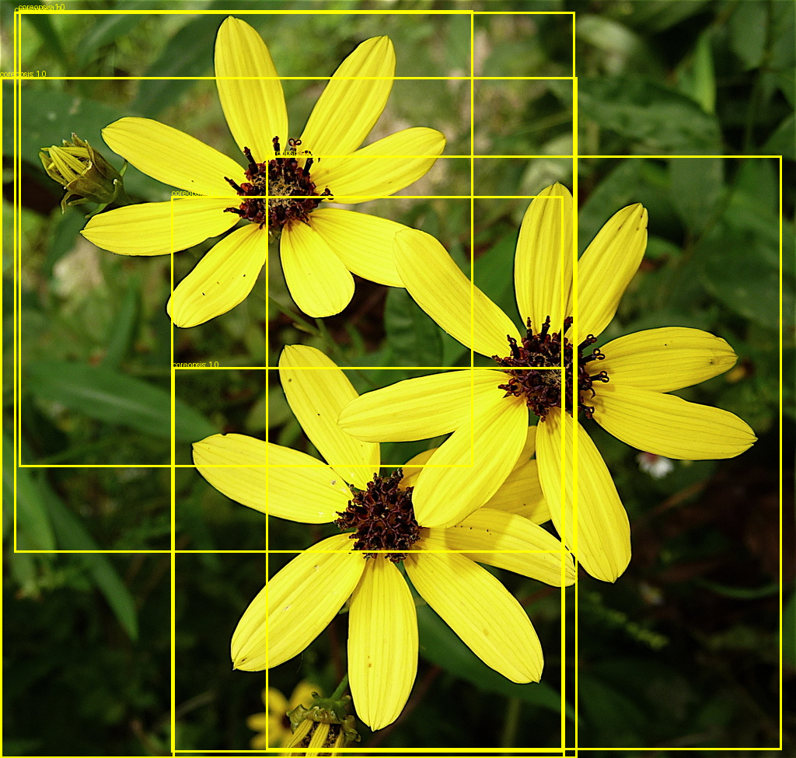
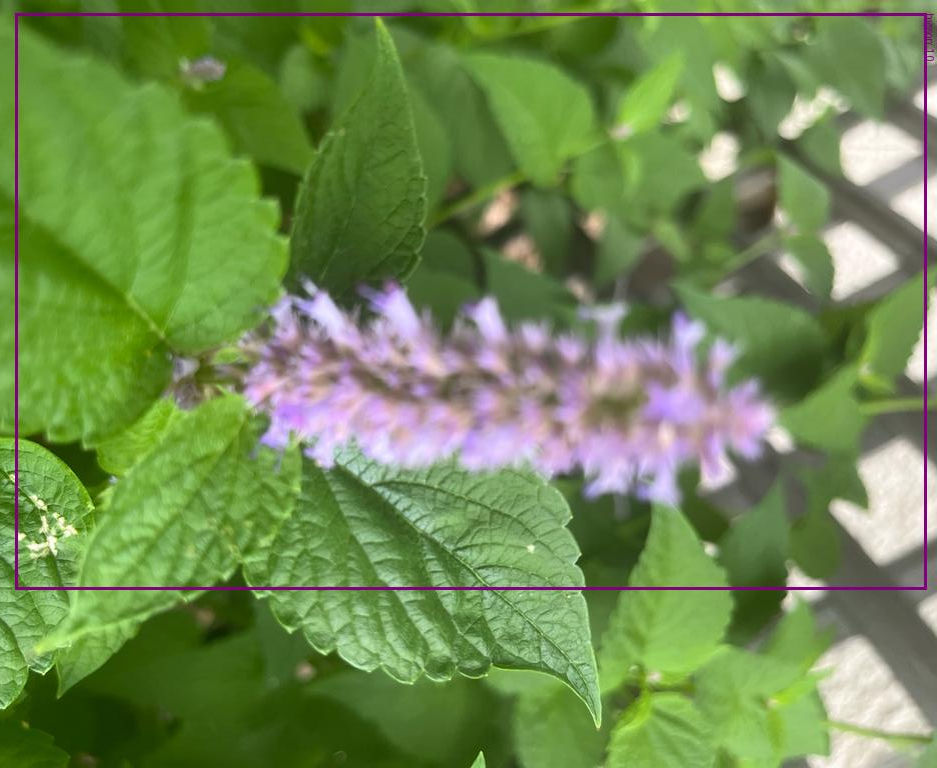
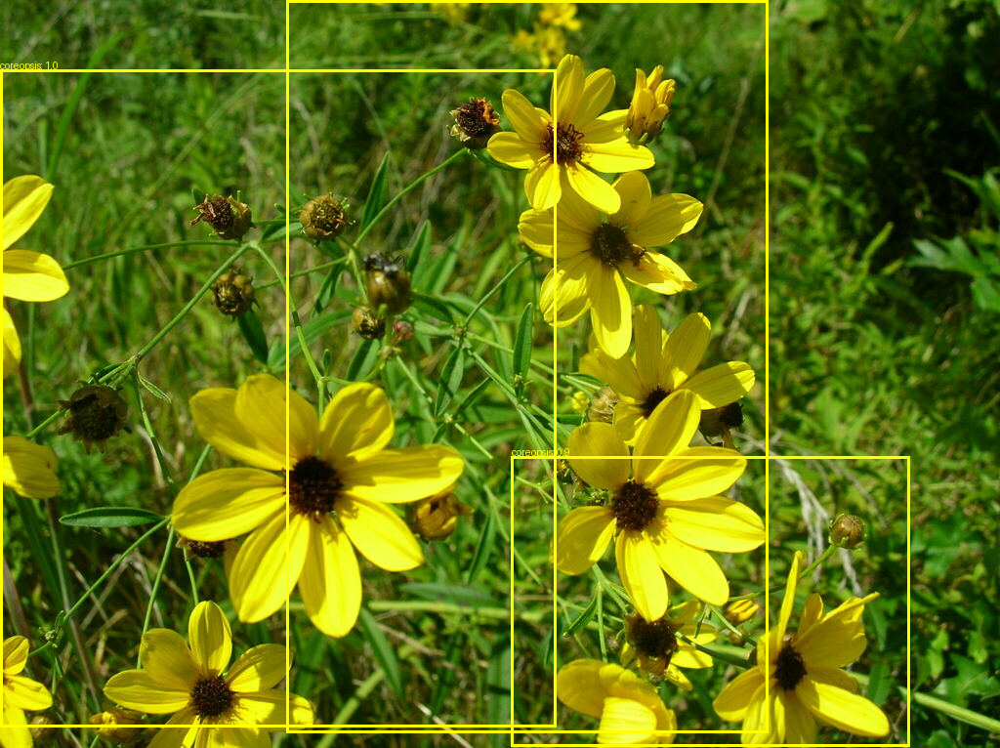

Projects
Plant Species Detection & Classification System
Python, Computer Vision, Machine Learning
- Developed YOLOv8-based object detection system to identify native Ontario plants and invasive species
- Conducted systematic experiments comparing model architectures and data efficiency to optimize performance
- Trained models on 300+ images, while demonstrating that larger models overfit on constrained datasets
- Analyzed results to establish viable dataset requirements and sustainable AI practices for environmental applications



Proxmox Virtualization & Remote Hosting Environment
LXC, DDNS, Linux Networking
- Deployed a Proxmox VE hypervisor on a remote server to host and configure Linux containers
- Worked with port forwarding and SSH access for remote administration, establishing reliable connectivity for hosted services
- Implemented Dynamic DNS to ensure uptime despite changing public IPs


Work Experience
Vertical Lift Autonomy Research Assistant at the NRC FRC
01/2026 - Present
- Designed software tools for vertical lift autonomy research, applying AI/ML techniques to flight science problems
- Assisted in validation of AI/ML outputs, ensuring robustness and correctness of research tools and simulations
- Collaborated with research teams, following best practices in version control, documentation, and technical reporting
Night Merchandiser at Costco
07/2022 - 08/2023
- Collaborated with a team to stock shelves with attention to detail, ensuring products are properly rotated and organized for opening
- Performed inventory counts and assisted in inventory management tasks to minimize discrepancies
- Adhered to safety protocols and maintained a clean workspace